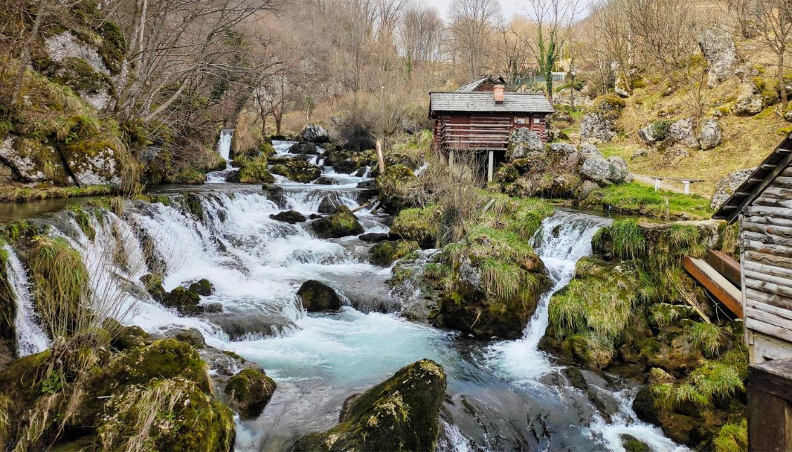

Krupa na Vrbasu is a town and municipality located in the northwestern part of Bosnia and Herzegovina, on the Vrbas River. It is part of the Banja Luka District. The town has a population of approximately 20,000 people.
Krupa na Vrbasu is known for its beautiful natural scenery, including the Krupa Waterfalls and the Vrbas Canyon. The town is also a popular tourist destination for its many historical and cultural attractions, such as the Krupa Fortress and the Old Town Center.
Some of the popular activities in Krupa na Vrbasu include hiking, biking, swimming, fishing, and kayaking. The town is also home to a number of restaurants, cafes, and shops.
Krupa na Vrbasu is located approximately 100 kilometers from Banja Luka and 200 kilometers from Sarajevo, the capital of Bosnia and Herzegovina. The town can be reached by car, bus, or train.
By car: The fastest way to get to Krupa na Vrbasu is by car. The town is located on the M16 highway, which connects Banja Luka to Sarajevo.
By bus: There are regular bus services from Banja Luka and Sarajevo to Krupa na Vrbasu. The journey takes approximately 2 hours from Banja Luka and 3 hours from Sarajevo.
By train: There is a train service from Banja Luka to Krupa na Vrbasu. The journey takes approximately 2.5 hours.